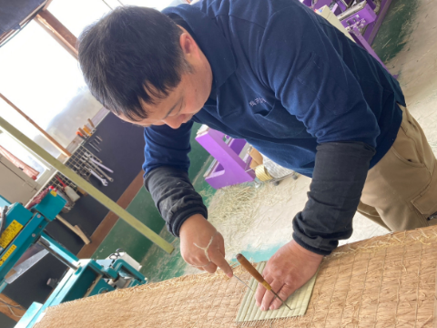

Flow施工の流れ
-
- 01見積もり・引き上げ
-
ご予約をいただいた日に、お見積りをさせていただきます。その際にサンプルをお持ちいたしますので、ご自由にお選びください。
お見積りができましたら、採寸いたします。畳はその部屋によって形も大きさも様々で、しっかり測らなければ入らなくなってしまうこともあります。
その後引き上げさせていただきます。表替えと裏返しの場合、朝お預りでその日のうちにお届けにあがります。(数に制限があります)
-
- 02補修箇所確認
-
畳の表替えは、表面のゴザを交換すればいいというわけではありません。
長年の使用により芯材がへこんでいたり、角が丸くなっていたり、畳と畳の間に隙間ができてしまっていたりと。表替えはその補修をするためにするといっても過言ではありません。
-

- 03補修
-
補修箇所を確認したら、その部分にワラを足したりしながら直していきます。
表替えした畳は、替える前と全く違う畳のように生まれ変わります。 平らなところは平らに、角はきれいな角にというように補修を行います。
-
- 04完了
-
全ての畳表を替え終えたら、お部屋へ入れていきます。畳は同じ部屋にあってもそれぞれに形が違います。
元の場所にピッタリと合うように戻したら完了です。
Tatami's Knowledge畳の豆知識
当店でご購入いただいた畳を、いつまでも美しく、ご愛用いただくために、お手入れ方法をご紹介いたします。
イ草畳のお手入れ方法
-
- 乾拭き
-
余計な水分は、カビのもとになります。
お掃除は、掃除機＋乾拭きが基本で、市販の不織布モップを使用すると便利です。
より丁寧にお掃除するなら、米ぬか拭きがお勧めです。掃除機をかけた後、木綿布にくるんだ米ぬかで撫でてください。米ぬかの油がしみこんで、つやのある汚れにくい美しい畳に仕上がります。
-
- 畳干し
-
干すことで最高に気持ち良くご使用いただけます。
畳を起こして（マイナスドライバーを畳の隙間にいれると持ち上がります）、空き缶をつっかえ棒にし、窓をあけておくだけでもOKです。 畳の下の湿気がなくなり、畳が長持ちします。
-
- デコボコ直し
- 家具等でデコボコができた時は、タオルとアイロンがお勧めです。 硬く絞ったタオルを被せ、上からスチームアイロンをかけると元に近い状態まで復元します。
-
- しみ抜き
-
畳にものがこぼれても、汚れの種類で手入れ可能なものがあります。
汚れの種類 お手入れ方法 コーヒー、お茶、
ジュース、お酒、
醤油、ソースすぐにタオルやペーパー等で吸い取り、食塩をかけます。
食塩が湿ってきたら、歯ブラシ等で畳の目に沿ってこすり、掃除機をかけてください。
色がしみている時は、漂白剤をつけてこすり、硬く絞った布で拭き取ります。
その後、水拭き、乾拭きを十分に行ってください。ガム シンナーかベンジンを布に浸して拭き取ります。
畳の目につまっている時は、布の上からアイロンをあてて、
柔らかくして取り除きます。クレヨン、化粧品 住まいの洗剤を歯ブラシに付けて、畳の目に沿ってこすり落とします。
その後、水拭き、乾拭きしてください。灯油 布にアルコールを付けて拭き取り、乾拭きしてください。 水溶性インク 布にアルコールを付けて拭き取り、乾拭きしてください。
カビ・ダ二の予防
-
掃除機はタタミの目に添ってしっかりかけ、 いつでも清潔にして、風通しをよくしてください。万が一カビが発生したら、水で薄めた漂白剤やアルコール系殺菌剤で軽く 拭き取ってください。（塩素系漂白剤は使用しないでください。）
-
カビは一定の温度・湿度・栄養の３つの要素が揃うと発生してしまいます。発生を抑えるためには、除湿をおこなってください。最も効果的な方法が、除湿機とエアコンの除湿機能です。生活中はエアコンを使用し、部屋を使用していない時は除湿機をお勧めいたします。
知っトク情報
-
- 畳に付いている天然染土は、安全！
- 新しい畳表に替えた時は、土がついています。これは不良品ではなく、染土というもので、とても大切な役割を果たしています。イ草を乾燥するときに表面を覆い、水分が均一に抜けるようにしたり、畳表を織る時にイ草が滑らないようにする役割があります。また葉緑素の酸化を防いでイ草の色を青く、新鮮に保つ働き、さらに畳特有の香りも泥染めしないと出ません。特に熊本の畳表には、良質の天然染土が使用されており安全です。なお、この染土は敷き込みは乾拭きします。
-
- 畳の大きさは、それぞれ違います！
- 畳は、どれも一緒にみえますが、実は１枚１枚形が違います。このため、目印もつけずに外すと「入らない」こともあります。これは、微妙に違う部屋の形に合わせて、パズルのように畳を合わせているからです。 もし自分で動かす場合は、裏に番号や方向を書いておいてくださいね。